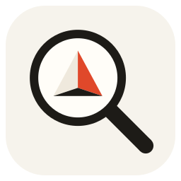

PrismSpot 搜的快 隐私政策
更新日期：2026 年 11 月 5 日
读取哪些内容
- 为了让你能搜到文件，PrismSpot 会读取你在设置里选择的搜索位置中的文件名、文件夹、修改时间、大小，以及部分文件（PDF、Word、Excel、PPT、文本等）的正文。
- 这些内容只保存在你电脑上的索引文件里（位置可以在「设置 → 索引」中查看和更改）。
- 预览 Word / PowerPoint 时，如果电脑装有 Microsoft Office，会用 Office 在本机生成预览页面，同样只保存在你的电脑上。
网络
- PrismSpot 不会把你的文件、搜索内容或索引发送到任何服务器，也没有统计、遥测或广告。
- 唯一的联网操作是通过 Microsoft Store 查询和购买会员：由 Windows 和 Microsoft Store 完成，适用 Microsoft 隐私声明。我们看不到你的付款信息。
AI 接入（MCP，会员功能）
- 如果你开启并配置了 AI 助手（例如 Claude、Cursor、VS Code），这些 AI 助手可以通过 PrismSpot 查找和读取你已索引的文件。
- 读取的内容会交给你自己选择的 AI 助手，之后如何处理，以该 AI 助手的隐私政策为准。
- 这一功能可以随时在「设置 → AI 接入」里关闭。「一键配置」只会在这些 AI 助手的配置文件里添加或删除 prismspot 这一项，修改前会备份原文件。
删除数据
- 删除索引文件夹和
%AppData%\PrismSpot文件夹，即可删除 PrismSpot 保存的全部数据。 - 从 Microsoft Store 卸载后，索引文件夹不会自动删除，可以手动删掉。你的文档本身始终不受影响。
联系我们
有问题或建议，请在 这里提交反馈。
Privacy Policy (English)
PrismSpot runs entirely on your PC and does not collect, upload or sell your files or personal data. To make files searchable, it reads file names, folders, sizes, dates and the text of supported documents in the locations you choose, and stores them in an index on your PC. Its only network activity is checking and buying membership through the Microsoft Store, handled by Windows under the Microsoft Privacy Statement. If you turn on the AI connection (MCP, a member feature), the AI apps you configure can search and read your indexed files; what they do with that content is governed by their own privacy policies, and you can turn it off at any time. Deleting the index folder and %AppData%\PrismSpot removes all data the app stored. Contact: feedback.